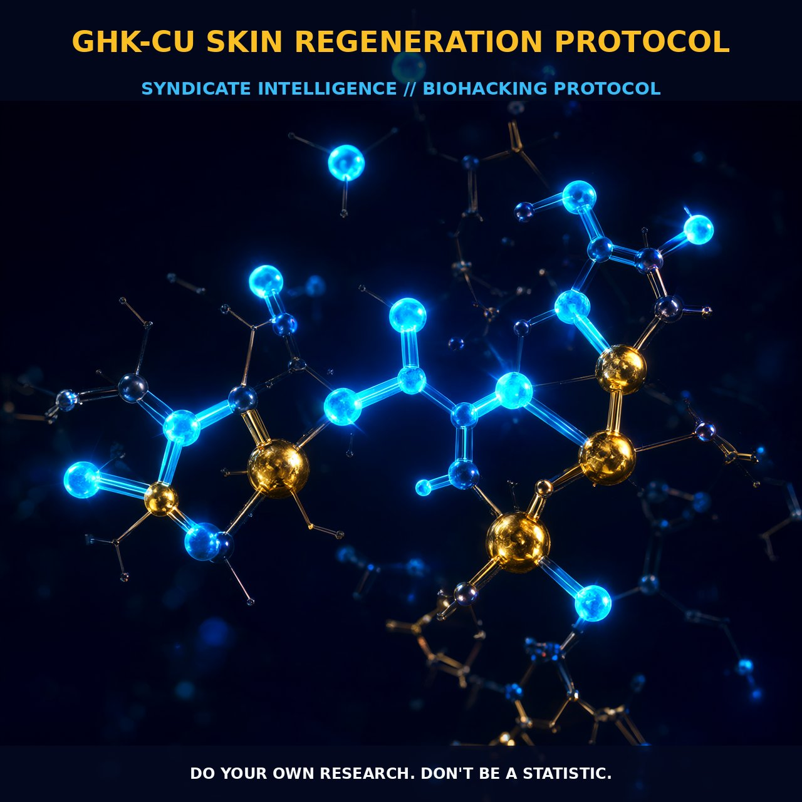

GHK-Cu: The Skin Regeneration Protocol

1. The Mechanism
GHK-Cu, a tripeptide complexed with copper (II), stands out as a pivotal component in skin regeneration and wound healing. Composed of glycyl-L-histidyl-L-lysine (GHK), this peptide is naturally present in human plasma, saliva, and urine, but its levels decline with age. The addition of copper (II) enhances its biological activity, forming GHK-Cu. This complex interacts with numerous biological pathways, modulating gene expression and stimulating cellular processes crucial for skin regeneration.
GHK-Cu can upregulate and downregulate over 4,000 human genes, effectively resetting DNA to a healthier state. This intricate gene modulation involves pathways related to collagen synthesis, glycosaminoglycan metabolism, and the regulation of metalloproteinases and their inhibitors. The peptide's activity is not limited to the skin; it also stimulates tissue repair in other organs, including the gastrointestinal tract, bones, and even hair follicles.
GHK-Cu's role in wound healing is particularly pronounced due to its ability to attract immune and endothelial cells to injury sites, thereby accelerating the healing process. It stimulates the synthesis and breakdown of collagen and glycosaminoglycans, critical components of the extracellular matrix. This dual action ensures that new tissue is formed and old tissue is remodeled efficiently. Additionally, GHK-Cu enhances angiogenesis and nerve outgrowth, contributing to the overall regenerative capacity of the tissue. The peptide's multifaceted actions make it a promising therapeutic agent for various conditions, from skin inflammation to metastatic colon cancer.
2. Biological Leverage
GHK-Cu's impact on skin regeneration is multifaceted and leverages several key biological pathways. The peptide modulates cellular pathways involved in the synthesis of collagen and glycosaminoglycans, which are vital for skin structure and elasticity. By upregulating the expression of genes related to these processes, GHK-Cu enhances the production of these extracellular matrix components, leading to improved skin firmness and density.
Furthermore, GHK-Cu stimulates the activity of metalloproteinases, enzymes that break down extracellular matrix components, facilitating tissue remodeling and repair. Simultaneously, it modulates the activity of their inhibitors, ensuring a balanced breakdown and synthesis of matrix components. The peptide's ability to attract immune and endothelial cells to injury sites is crucial for wound healing. This attraction enhances the local immune response and promotes the formation of new blood vessels, both of which are essential for tissue repair. GHK-Cu also exhibits anti-inflammatory properties, which help reduce inflammation and promote a more favorable healing environment.
Additionally, the peptide's role in increasing collagen synthesis and enhancing angiogenesis contributes to the regeneration of skin and other tissues. These biological mechanisms collectively support GHK-Cu's effectiveness in promoting wound healing and skin regeneration.
3. Tactical Implementation
To maximize the benefits of GHK-Cu for skin regeneration, it is crucial to consider both the mode of application and the timing of administration. Topical application is the most common method, as it allows direct delivery to the skin. However, the hydrophilic nature of GHK-Cu can limit its penetration into the skin, necessitating the use of enhancement techniques. Microneedle arrays are a promising method to increase the permeability of GHK-Cu through the skin. These arrays create microchannels that facilitate the passage of the peptide into the deeper layers of the skin, enhancing its efficacy. Studies have shown that microneedle pretreatment can significantly increase the penetration of GHK-Cu, allowing for better distribution and absorption.
Dosage and timing are also critical factors. Human dosing is not well established, but low-to-moderate amounts of GHK-Cu are generally well tolerated. A common approach is to apply the peptide topically once or twice daily, depending on the condition being treated. In cases of wound healing, consistent application during the healing process can provide sustained benefits. Stacking GHK-Cu with other regenerative agents, such as hyaluronic acid and retinol, can enhance its effectiveness. Hyaluronic acid provides moisture and supports skin hydration, while retinol stimulates cell turnover and collagen production, complementing the effects of GHK-Cu.
Prostar Life Hack
Maximize the benefits of GHK-Cu by using microneedle arrays to enhance its penetration. Apply the peptide topically once or twice daily, and consider stacking it with hyaluronic acid and retinol for enhanced regenerative effects.
[ AUTHOR: LEAD TECHNICAL RESEARCHER ]